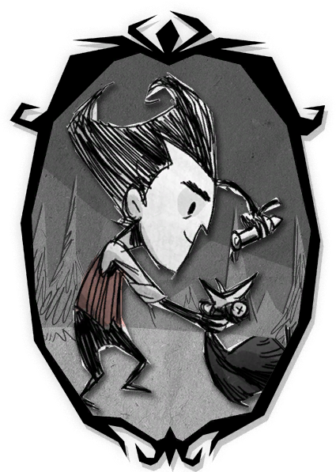
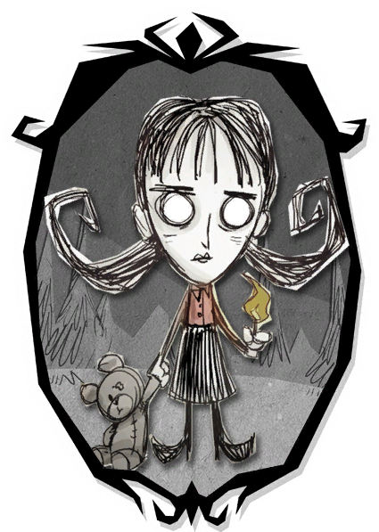
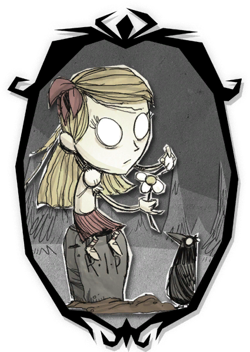
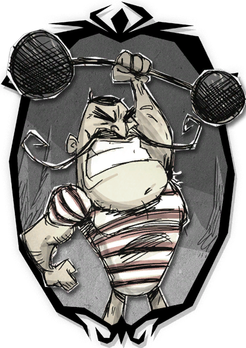
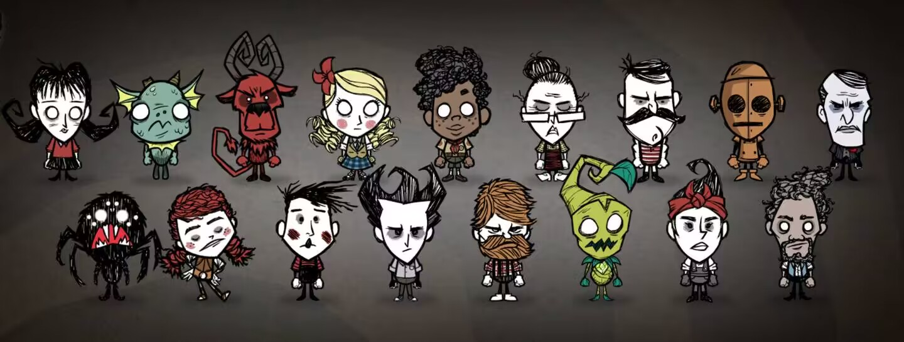
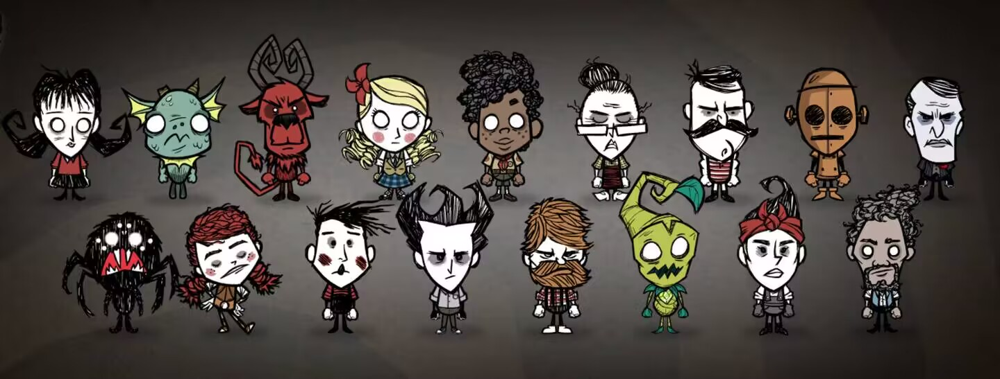

饥荒简介
饥荒 是一款结合冒险、生存、角色扮演、养成等元素于一身的游戏，描述玩家被恶魔流放到一个荒芜的饥荒世界中，唯一能依靠的是自己的双手与求生能力。玩家必须妥善运用饥荒世界中的资源，尽可能的武装自己并且强大起来，好在冒险模式中击败恶魔回到现实世界。
角色图片
   全家福

×

饥荒 是一款结合冒险、生存、角色扮演、养成等元素于一身的游戏，描述玩家被恶魔流放到一个荒芜的饥荒世界中，唯一能依靠的是自己的双手与求生能力。玩家必须妥善运用饥荒世界中的资源，尽可能的武装自己并且强大起来，好在冒险模式中击败恶魔回到现实世界。
